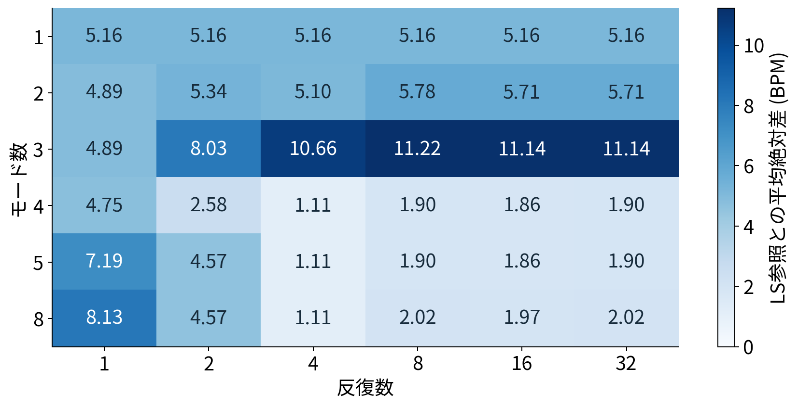
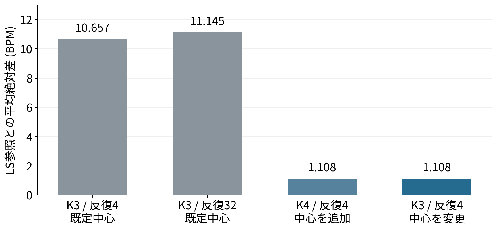
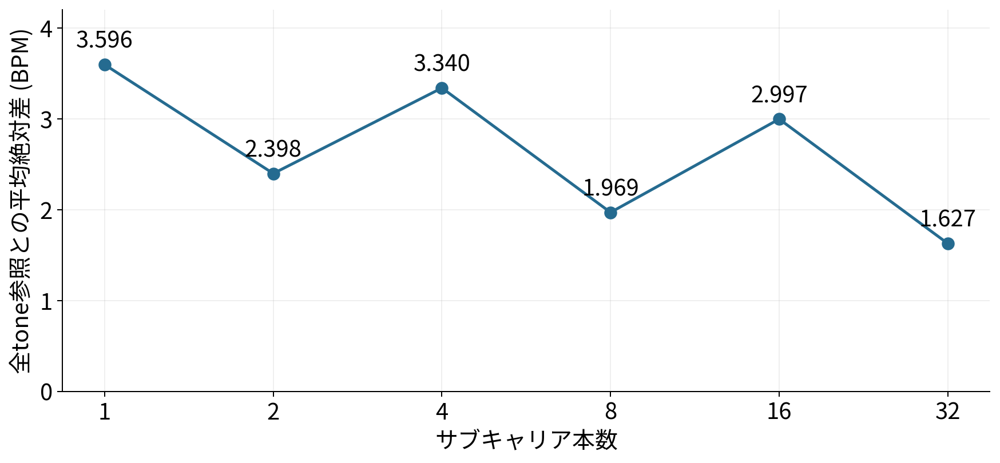
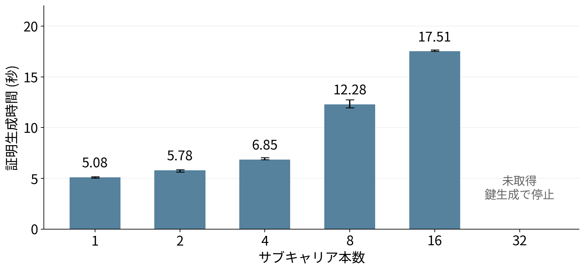
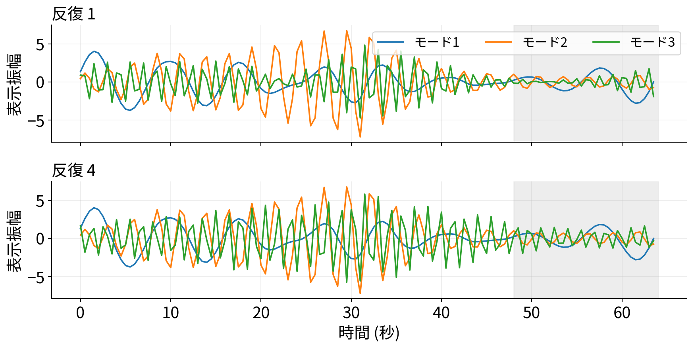
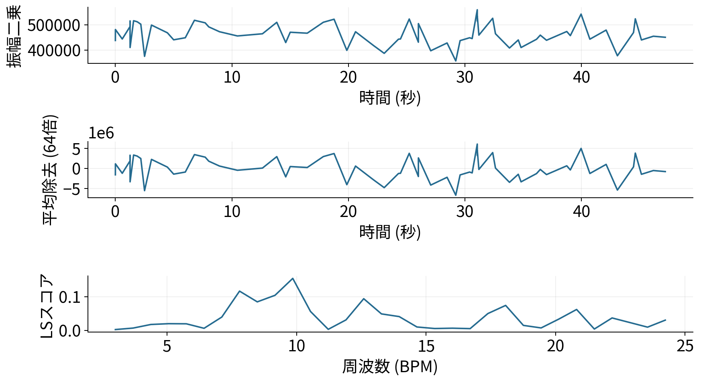

今回の目的・実施内容・結果 | CSI呼吸推定回路修士研究 / 2026年10月26日
今回、何を確かめるために
何を行い、何が分かったか
各比較proofの公開中間値を含めた再測定版：新しい測定結果・完了状況 / 各proofに対応する波形。以下は前回までの結果で、追加公開後の新しい計時とは分けています。
今回の目的は、回路内VMDの推定が変わる条件と、Lomb–Scargleの本数増による効果・計算負荷を調べること。さらに、原因を追えるように回路の途中の数値を見える形にした。
今回評価できるのは「参照手法との一致度」。真の呼吸数への精度は未評価。
Rawの実データ8収録を使用。正解呼吸数がないため、LS参照との差を比べた。VMDの参照は同じPCA波形上のLS、LS本数比較の参照は同じアンテナ対の全サブキャリアLSで、別の基準である。
1. VMD：モード数・反復数を増やすと変わるか
目的回路内VMDの推定値がLS参照から大きく離れる状況に対し、分解する成分の数や計算回数の不足で説明できるかを調べる。
行ったこと同じ実データ8収録で、モード数6通り × 反復数6通りの計36設定を比較した。モードは「信号を分けた各周波数成分」、反復は「その分け方を更新する計算回数」を指す。

各セルは、同じ入力波形のLS参照との平均絶対差（BPM）。小さいほど参照と近い。
結果・分かったこと
3モードでは、反復4回の差 10.657 BPM に対し、32回でも 11.145 BPM。反復を増やすだけでは差は小さくならなかった。一方、4モード・4回では 1.108 BPM となった。
ただし、4モードにすると初期中心も1つ増える。「モード数の効果」と「最初に置く周波数の効果」を、この比較だけでは分けられない。
2. VMD：最初に置く周波数の影響を調べる
目的モードを増やしたことではなく、初期中心の配置が結果を変えた可能性を調べる。初期中心は、各モードが分解を始める周波数の目安。
行ったこと3モード・4反復を固定し、初期中心のbin番号を [8,24,48] から [8,16,24] へ変更した。これは約 [7.5,22.5,45] から [7.5,15,22.5] BPMへの変更。

左2本は既定の初期中心。右端はモード数と反復数を変えず、初期中心だけを変更した条件。
結果・分かったこと
初期中心だけの変更でも、LS参照との差は 10.657 → 1.108 BPM に小さくなった。制約数は既定と同じ 340,734。今回の8収録では、計算回数を増やすよりも初期配置を見直す候補が得られた。
この8収録を使って選んだ候補であり、真の呼吸数に近づいたとはまだ言えない。未使用の収録と正解呼吸数を使った確認が必要。
3. Lomb–Scargle：本数を増やすと推定値はどう変わるか
目的利用するサブキャリアを増やしたときに、推定値が参照値へ近づくかを調べる。
行ったこと同じ8収録について、1・2・4・8・16・32本を比較した。同じ送受信アンテナの組を使い、既に選んだサブキャリアを残したまま本数を増やした。

参照は、同じアンテナ対の全サブキャリアを使った浮動小数点LS。呼吸の正解値ではない。
結果・分かったこと
全サブキャリア参照との差は、1本で 3.596 BPM、32本で 1.627 BPM。ただし、途中で差が大きくなる条件もあり、本数を増やせば毎回改善するわけではなかった。
別の確認として、同じサブキャリア集合・点数・周波数候補の浮動小数点LSと比べると、全48条件で推定binと選択サブキャリアが一致した。これは実装間の一致であり、生体情報としての精度の保証ではない。
4. Lomb–Scargle：本数を増やすと証明は重くなるか
目的推定値への効果と合わせて、証明生成の時間がどの程度増えるかを調べる。
行ったこと各本数の回路を作成し、代表1収録で証明生成・検証を3回ずつ実行した。鍵生成などの準備時間と、毎回の証明生成時間は分けて記録した。

Apple M4 Pro・RAM 24 GiBでの実測。棒は3回の中央値、線は最小〜最大。鍵生成・witness・検証時間を除く。
結果・分かったこと
1本の証明生成は 5.08秒、16本では 17.51秒。1〜16本の計15証明はすべて検証に成功した。本数増には証明生成時間の増加が伴った。
32本は推定計算・witness生成まで成功したが、鍵生成がNodeの8 GiB上限でメモリ不足、12 GiBでの再試行も30分上限に達した。32本の証明生成時間は未取得。今回の時間はエッジ端末での実測ではない。
5. VMD：最終結果だけでなく、途中の変化を見る
目的最終BPMだけでは分からない、各反復で残る成分や中心周波数の変化を確認できるようにする。
行ったこと診断用の別回路に、入力・DFT係数・各反復のモード係数・中心を公開出力として追加した。代表収録を3モード・4反復で処理し、証明も生成した。

同じ収録の反復1回目と4回目。公開した周波数係数から、表示側で逆DFTしたモード波形。灰色は観測外のゼロ埋め区間。
結果・分かったこと
代表収録の中心binは [8,24,48] → [8,24,47] → [8,24,46] → [8,24,46] → [8,24,46]。中心は2回目以降変わらなかった。途中の係数・波形を比較できるようになり、反復追加の効果を調べる材料が得られた。
中心が同じでも、全モード係数が同じとは限らない。この例だけで全収録の原因は断定しない。逆DFTは回路内の処理ではなく表示用の変換。
6. Lomb–Scargle：処理段階ごとの数値を見る
目的入力から最終周波数を選ぶまでの、どの処理で数値がどう変わるかを確認できるようにする。
行ったことI/Q、振幅二乗、平均除去、sin/cos基底、射影、スコアの分子・分母を公開出力へ追加した。VMDと同じ代表収録を、8本の診断回路で処理した。

回路が選択したSC 7（元tone 32）の例。時間波形から周波数ごとのスコアへ進む。
結果・分かったこと
段階ごとの公開値から、振幅二乗 → 平均除去 → 周波数スコアを図にできた。両診断回路とも証明検証に成功し、公開中間値を1つ変えると同じ証明が拒否されることも確認した。全段階を切り替える波形ビューアで詳細を見られる。
LSスコアの分子÷分母は表示側の計算。診断回路では入力情報が公開されるため通常回路と分離した。VMDとLSは前処理・点数・ピーク選択が違い、この代表例のBPMだけでは方式の優劣を判断できない。
今回の到達点と、まだ言えないこと
| 項目 | 今回完了した範囲 |
|---|
| VMDの設定比較 | 実8件×36設定の整数参照計算。代表4構成×8件で実回路witnessと最終係数・中心・出力を照合。 |
| 通常LS | 実8件×6本数のwitness照合。1・2・4・8・16本は各3回、計15件の証明生成・検証成功。32本の証明は未生成。 |
| 公開中間値の診断 | VMDとLSの代表各1件で証明生成・検証・中間値改変の拒否を確認。通常LSと合わせ計17証明。 |
witnessは回路内の計算値一式。witnessを生成・照合することと、Groth16証明を生成することは別。通常VMDの36設定すべてについて証明を生成したわけではない。
報告で伝える結論
VMDは反復数だけでなく初期中心の配置を見直す候補が得られた。LSは本数増によって証明時間が増えた一方、参照値との一致は単調には改善しなかった。中間値の公開により、今後は最終BPMだけでなく処理途中から挙動を調べられる。
次に必要なこと正解呼吸数付き・未使用の収録で候補を評価する。今回の8件に合う設定が、別の収録でも良いとは限らない。32本の鍵生成条件と、エッジ実機での処理時間も別途確認する。
全測定表・入力条件・コード画像を含む詳細版 / 公開中間値ビューア / 再現手順・ファイル一覧